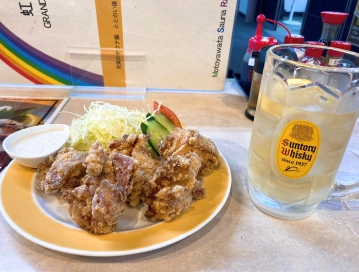

サウナいろいろ
ととのうとは
サウナでととのうとはサウナに入って温まった後に水風呂に入り、その後外で体を冷やすというサイクルです。
体内の血流が良くなり、酸素が脳を駆け巡り、リラックス状態になることです。サウナと水風呂の温冷刺激によって脳内で分泌されるのが、「β-エンドルフィン」「オキシトシン」「セロトニン」の3つの物質。「β-エンドルフィン」は、モルヒネと同じような作用をする物質で、鎮痛効果や気分の高揚・幸福感が得られる“脳内麻薬”です。「オキシトシン」はストレス緩和、「セロトニン」はうつ症状の改善・精神安定の効果があるそうです。
サ飯
サ飯とはいわゆるサウナ後に食べるご飯のことであり、サウナの影響により味覚が通常に比べて敏感になり、ご飯が美味しく感じます。
- 

サウナ用語
| サウナー | サウナーに通う人のことです。サウナ愛好家です。 |
| 外気浴 | サウナ、水風呂後に外で体を冷やす行為です。 |
| ロウリュウ | サウナーストーンに水やアロマ水をかけて蒸気を発生させます。蒸気を発生させることにより湿度が上がり、体温をあげる効果があります。 |
| アウフグース | ロウリュウ後にタオルや電動工具などを使って熱波を発生させる行為です。こちらも体温一気に上げる効果があります。 |
| 熱波師 | ロウリュウやアウフグースをを担当する職人のことです。 |
| オロポ | オロナミンCとポカリスエットを混ぜた飲み物。サウナ後に飲むと、イオンの補給や爽快さを感じることが出来、とても人気な飲み物である。 |
| ととのい椅子 | サウナ、水風呂後休憩後に使用する椅子。通常タイプの椅子もあれば、リクライニングタイプやベンチタイプなど色々なタイプがあります。 |
| サウナハット | サウナ中に熱から頭を守る帽子のことである。多くのサウナ施設がオリジナルのサウナハットを販売しており、サウナーの中で人気商品の一つである。 |